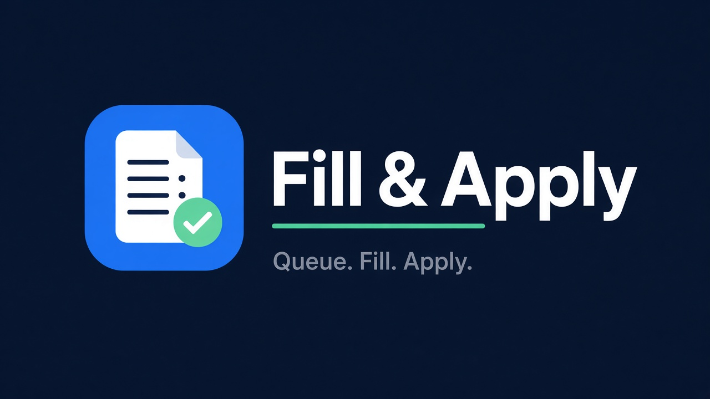

Fill & Apply
Queue. Fill. Apply.

Profile, documents, and backend queue config (stored in chrome.storage.local).
Mock queue (apply URLs)
Paste one real job apply URL per line (Greenhouse, Lever, etc.).
Example: https://boards.greenhouse.io/company/jobs/123.
Only http/https URLs are queued — chrome-extension:, about:, and empty lines are filtered out.
Saving rebuilds the queued list. Applied history is kept unless you Clear history.
Manual demo form: open demo/sample-application.html via Live Server or file://,
then use Fill current page. Demo is manual-only — it can never enter the mock queue.
Documents (resume / cover)
Stored as base64 in fillApply.documents for DataTransfer attach to input[type=file] (including Greenhouse hidden inputs / Attach buttons). Prefer small PDFs.